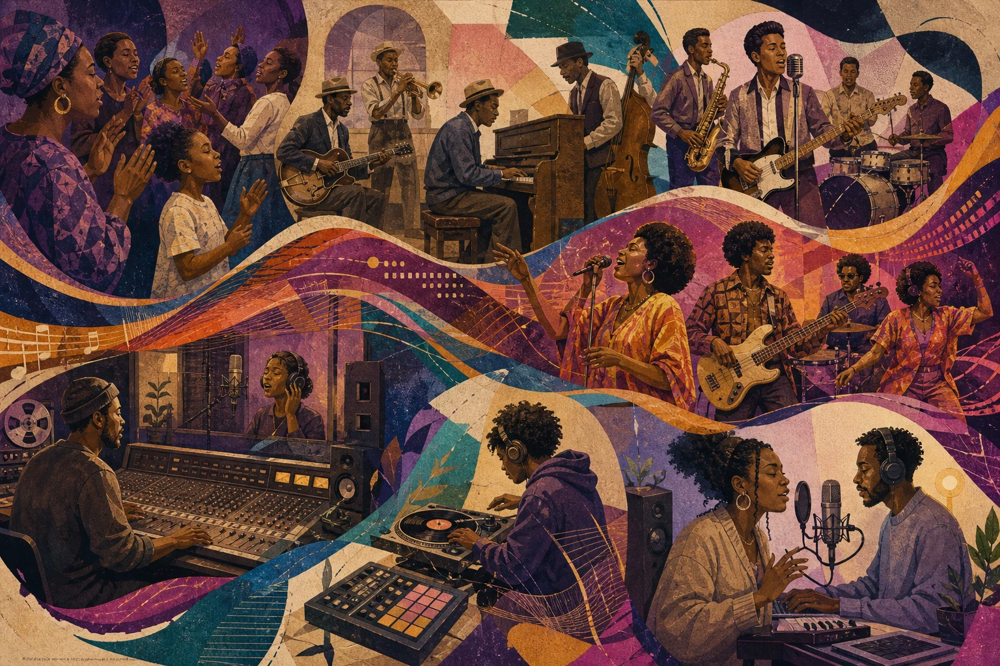
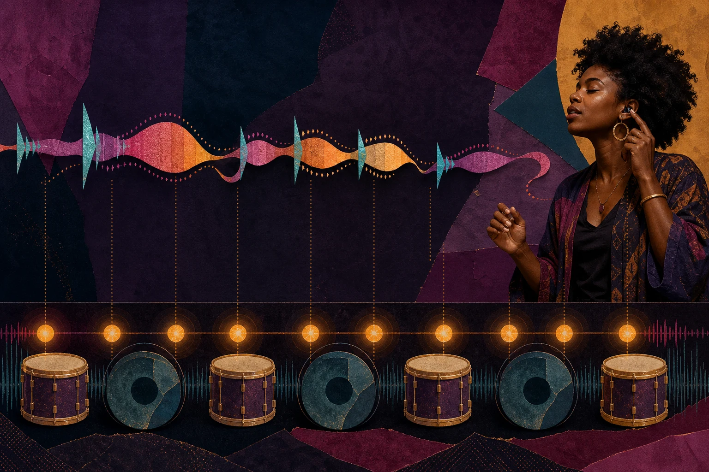
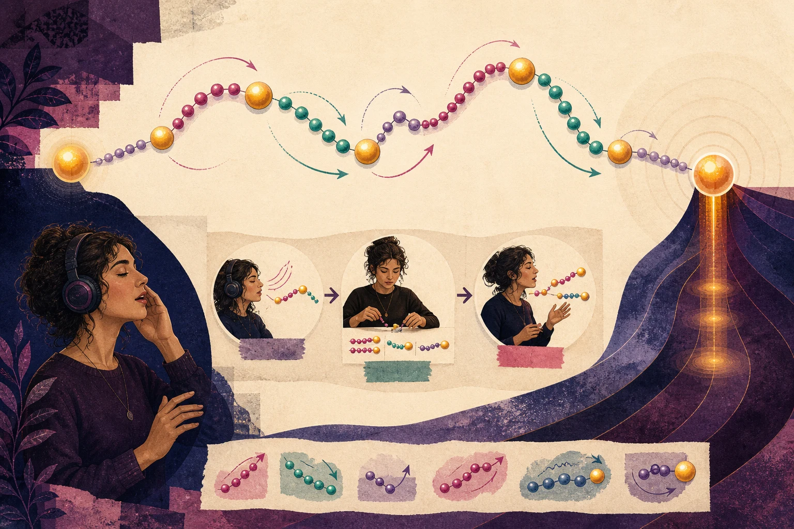
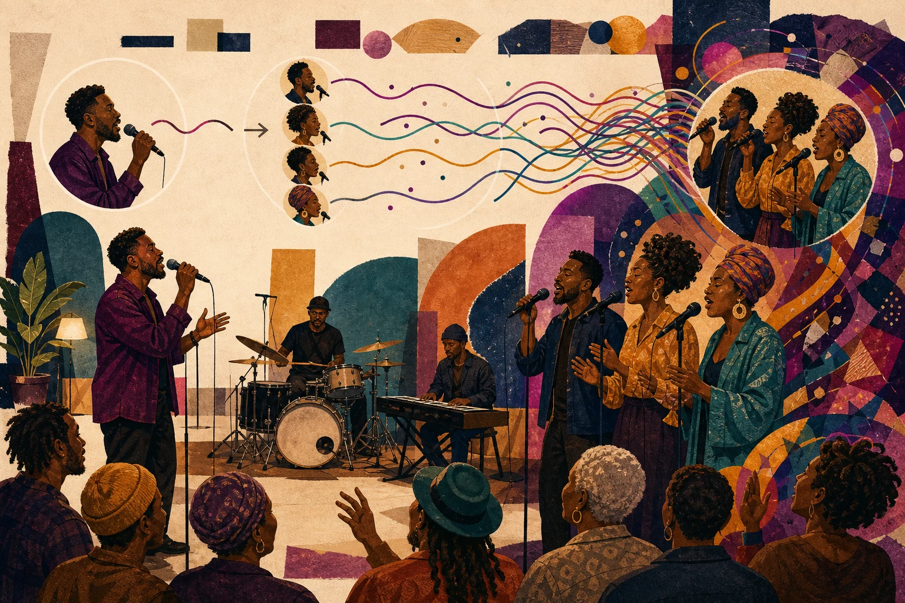
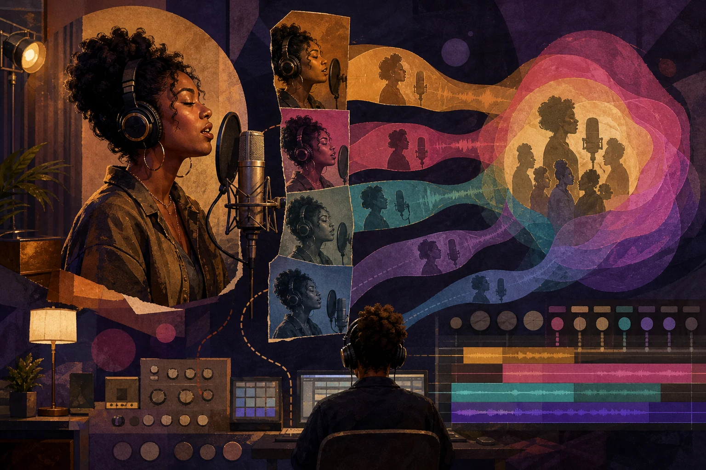
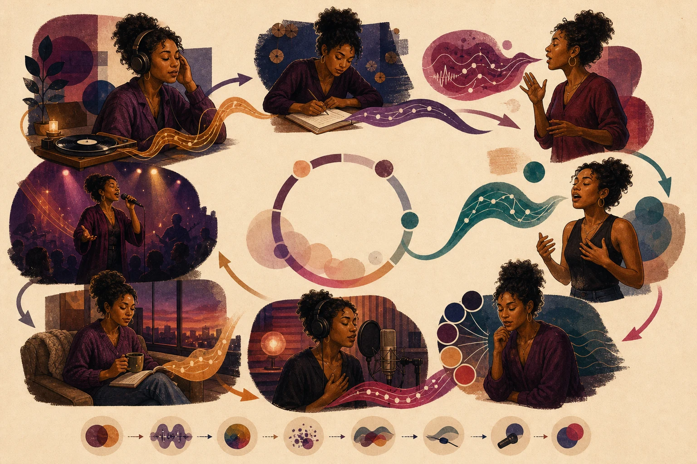
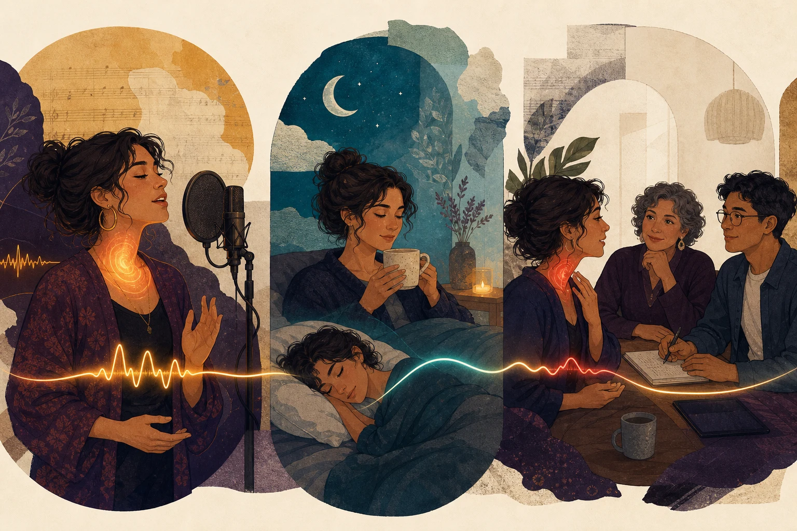

시간
박, 분할, 싱코페이션, 자음·모음·쉼의 배치
R&B는 런을 많이 넣는 창법이 아니에요. 역사, 시간, 멜로디·화성, 음색, 이야기와 관계를 한 곡 안에서 움직이는 음악 언어예요.
00 · 먼저 결론
보컬은 비트 위의 장식이 아니라 드럼·베이스·화음·가사·청중과 관계를 맺는 연주자입니다.
R&B 보컬은 흑인 미국 음악의 역사 속에서 발전한 시간·말·멜로디·음색·응답·제작의 예술이에요.
박, 분할, 싱코페이션, 자음·모음·쉼의 배치
뼈대, 코드톤, 굴절, 런의 방향과 착지
기식·밀도·밝기·성구·비브라토·거친 효과
화자, 가사, 콜 앤드 리스폰스, 청중과 앙상블
01 · 변하는 우산
이름, 산업, 공동체, 녹음 기술과 주변 장르가 바뀌며 계속 새로운 뜻을 얻었습니다.

미국 음반 산업에서 흑인 대중음악을 가리키는 새 상업 명칭으로 등장했습니다. 이전의 인종차별적 분류어를 대체하는 과정이었습니다.
블루스, 재즈, 가스펠, 보컬 그룹, 부기우기와 강한 백비트가 전후 도시 문화 속에서 관계를 맺었습니다.
소울·펑크·힙합·팝·전자 제작과 교류하며 컨템퍼러리 R&B, 네오 소울, 대안적 R&B 등으로 넓어졌습니다.
Library of Congress · Rhythm and Blues · Smithsonian Folklife · A History of Rhythm and Blues
02 · 한 테이크를 네 번 듣기
한 번에 전부 고치지 말고, 같은 녹음을 서로 다른 귀로 듣습니다.
| 렌즈 | 먼저 들을 것 | 진단 질문 | 바꿀 수 있는 변수 |
|---|---|---|---|
| 시간 | 큰 박, 분할, 시작·끝 | 프레이즈가 어느 박을 향하나? | 자음, 모음 중심, 길이, 쉼 |
| 멜로디·화성 | 뼈대음, 긴장과 착지 | 꾸밈을 빼도 방향이 들리나? | 목표음, 접근음, 코드톤, 윤곽 |
| 음색 | 밀도, 밝기, 성구, 비브라토 | 같은 색이 곡 전체를 덮나? | 접근 방식, 모음, 음량, 전환 |
| 이야기·관계 | 강세, 상대, 응답, 공간 | 누가 누구에게 왜 말하나? | 말의 강세, 대비, 코러스, 침묵 |
03 · 박 안의 관계
기준이 들려야 앞·뒤·정박의 선택도 의미가 생깁니다.

마디의 시작, 2·4의 백비트, 다음 구간으로 향하는 박을 몸으로 유지합니다.
8분·16분, 셔플·트리플릿 감각 속에서 짧은 음절의 언어를 통일합니다.
자음 공격, 모음이 들리는 중심, 강세, 피치 착지와 끝을 따로 움직입니다.
“뒤로 불러”를 이렇게 바꾸세요.
“어느 사건을, 어느 악기 기준에서, 얼마나, 어떤 효과를 위해 옮길까?”
04 · 말이 멜로디가 되는 곳
어떤 단어를 가까이 보여 주고, 어디서 멈추고, 무엇을 숨길지 결정합니다.
화자와 상대, 직설인지 망설임인지, 문장 속 가장 중요한 단어를 정합니다.
기능어는 가볍게, 의미어는 강세·길이·공간으로 드러내며 드럼과 베이스에 맞춥니다.
핵심음과 가사가 분명한지 확인합니다. 여기서 불분명하면 런이 해결해 주지 않습니다.
어느 모음을 남길지, 어디서 잘라 악기와 코러스가 말하게 할지 정합니다.
이미 전달되는 문장에 필요한 만큼만 스쿱, 폴, 비브라토, 런을 더합니다.
05 · 런의 해부
런은 음정, 리듬, 모음, 방향, 강세와 화성 착지가 결합된 작은 작곡입니다.

음높이를 빼고 시작·끝 박과 강세를 몸에 넣습니다.
첫 음, 방향 전환점, 목표음만 남겨 화성 방향을 확인합니다.
2–4음 단위로 정확히 만든 뒤 셀 사이를 겹쳐 연결합니다.
음 사이를 막연히 늘이지 말고 분할과 강세의 비율을 유지합니다.
한 모음에서 실제 가사, 다른 조, 원 템포와 앞뒤 문장으로 옮깁니다.
06 · 혼자 불러도 대화하기
좋은 아웃트로는 음을 계속 추가하는 것이 아니라, 이미 나온 재료를 기억하고 변형하며 공간을 배분합니다.

본 멜로디의 작은 리듬·음정 조각을 기억해 끝음, 길이, 시작 위치를 바꿉니다.
리드, 백업, 악기, 청중이 같은 공간을 차지하지 않고 질문과 답을 나눕니다.
벌스는 비우고, 훅은 모으고, 브리지는 대비하고, 아웃트로는 선택적으로 확장합니다.
| 보컬 층 | 주된 역할 | 맞춰 볼 것 |
|---|---|---|
| 리드 | 가사와 서사의 중심 | 강세, 프레이즈 방향, 친밀도 |
| 더블·유니즌 | 두께와 리듬 선명도 | 자음 시작, 모음 길이, 끝음 |
| 화음 | 코드 색과 진행 | 목표음, 보이싱, 음량, 비브라토 |
| 응답·카운터라인 | 대화와 상승 에너지 | 리드가 비운 공간, 동기 재사용 |
07 · 한 사람, 여러 표면
기식, 밀도, 밝기, 팔세토, 비브라토와 거친 효과는 곡의 관점에 맞춰 고르는 색입니다.
체스트·헤드·믹스·팔세토는 유용한 교육어지만 연구 용어와 경계가 항상 같지는 않습니다. 전환을 숨기는 것과 드러내는 것 모두 선택입니다.
시작 시점, 속도, 폭, 규칙성과 끝에서의 변화가 따로 움직입니다. 특정 숫자 하나를 건강한 R&B 표준으로 삼을 수 없습니다.
거칠게 들린다고 바로 병변은 아니지만, 원하는 소리가 났다고 안전이 증명되는 것도 아닙니다. 통증을 참고 독학하지 않습니다.
발성 메커니즘은 발성 시각 가이드, 높은 음의 조절은 고음 시각 가이드, 밝고 관통하는 음색은 트왱 시각 가이드에서 더 자세히 볼 수 있습니다.
08 · 매체가 악기가 된다
녹음된 목소리는 성대만의 출력이 아니라 거리, 모니터, 레이어와 편집이 함께 만든 결과입니다.

방향성 마이크의 가까운 거리는 저음 비율, 숨, 파열음과 친밀감을 바꿀 수 있습니다. “주먹 한 개”는 시작점이지 보편 정답이 아닙니다.
내 목소리를 적게 들으면 소음에 맞서 더 크게 내는 롬바르드 반응이 생길 수 있습니다. 기술 실패처럼 느껴질 때 모니터와 리버브를 함께 점검합니다.
여러 테이크의 장점, 더블, 옥타브, 화음과 카운터라인을 역할별로 배치합니다. 리드 한 줄을 먼저 명확히 만드는 편이 좋습니다.
투명한 교정과 일부러 들리는 효과는 서로 다른 제작 선택입니다. 사용 여부만으로 보컬의 음악성이나 진실성을 판정할 수 없습니다.
다중 테이크, 근접 마이크, 레이어, 자동화와 세밀한 편집
한 번에 이어지는 호흡, 무대 소음, 실제 인원, 세트 전체의 부하와 청중 응답
09 · 일곱 작업대
연습은 예쁜 소리를 우연히 찾는 시간이 아니라, 의도한 관계를 반복 가능하게 만드는 작은 실험입니다.

가수뿐 아니라 시대, 드럼, 베이스, 코러스와 제작을 기록합니다.
가사를 말하고 한 음으로 부르며 자음·모음·쉼을 놓습니다.
꾸밈 없는 선율, 코드톤, 긴장음과 목표 착지를 확인합니다.
작은 동기를 변형하고 넣는 버전과 빼는 버전을 비교합니다.
같은 음·가사를 여러 질감으로 부르며 음량까지 바뀌었는지 듣습니다.
거리·각도·게인을 하나씩 바꾸고 각 보컬 층의 역할을 정합니다.
원 키·템포·가사·자세·움직임과 세트 순서 속에서 재현합니다.
즉시 결과만 아니라 말소리, 음역, 피로와 실제 곡 전이를 봅니다.
더 정확하고 의도에 가깝고 비교적 편한가?
말소리·고음·노력감이 평소 상태로 회복됐는가?
반주·가사·마이크·움직임 속에서도 재현되는가?
10 · 부하와 회복
듣기 좋은 거침, 기식, 강한 소리도 조직 상태를 말해 주지 않습니다. 몸의 기능 변화는 별도로 봅니다.

NIDCD 음성 관리 지침은 수분·휴식, 소음 속 과도한 발성 줄이기, 쉰 상태나 피곤한 상태에서 무리하지 않기를 안내합니다.
11 · 짧은 오해 교정
교육 문장은 행동을 돕되 역사와 과학을 한 줄로 과장하지 않아야 합니다.
12 · 합의와 빈칸
R&B 보컬 연구의 가장 큰 문제는 장르 이름을 붙인 직접 실험이 적다는 점입니다.
| 자료 | 잘 답하는 질문 | 그대로 답하지 못하는 것 |
|---|---|---|
| 역사 아카이브 | 명칭, 계보, 공동체·산업 맥락 | 개인의 최적 성대 설정 |
| 음악학·문화연구 | 제작, 정체성, 미학과 의미 | 조직 안전성의 인과관계 |
| 그루브 청취 실험 | 특정 자극의 움직임·즐거움 평가 | R&B 가수의 보편 미세 타이밍 |
| 가창 실험 | 정해진 과제의 음정·음압·음원 | 완성 곡의 이야기와 장기 전이 |
| 임상 지침 | 평가 시점과 건강 의사결정 | 장르적 음색의 우열 |
논문을 읽을 때:
누가 · 어떤 곡이나 과제를 · 어떤 환경에서 · 무엇으로 측정했으며 · R&B까지의 연결 거리는 얼마인지 적으세요.
13 · 직접 확인하기
전체 참고문헌, 표본과 과제의 한계는 과학 상세 문서에 정리했습니다.